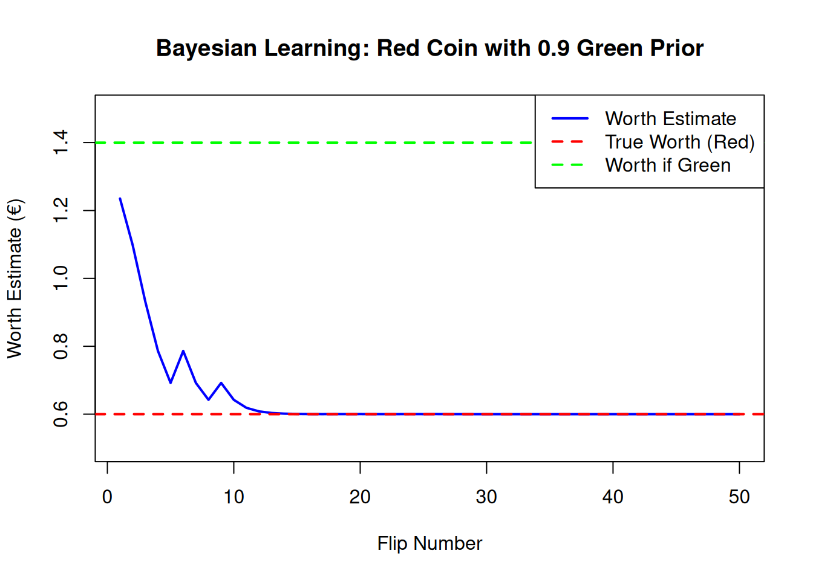
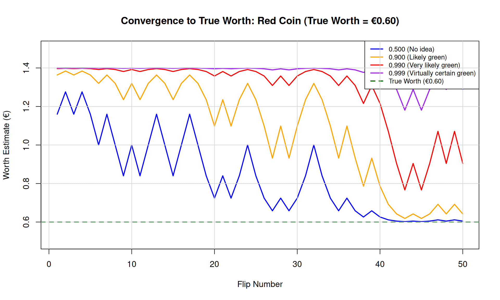
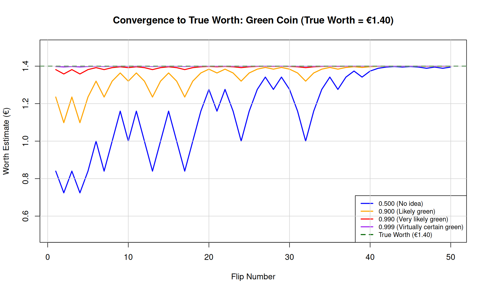
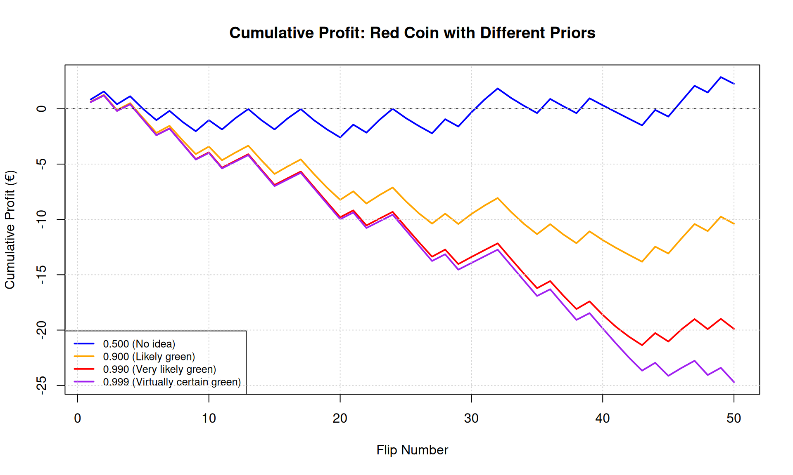
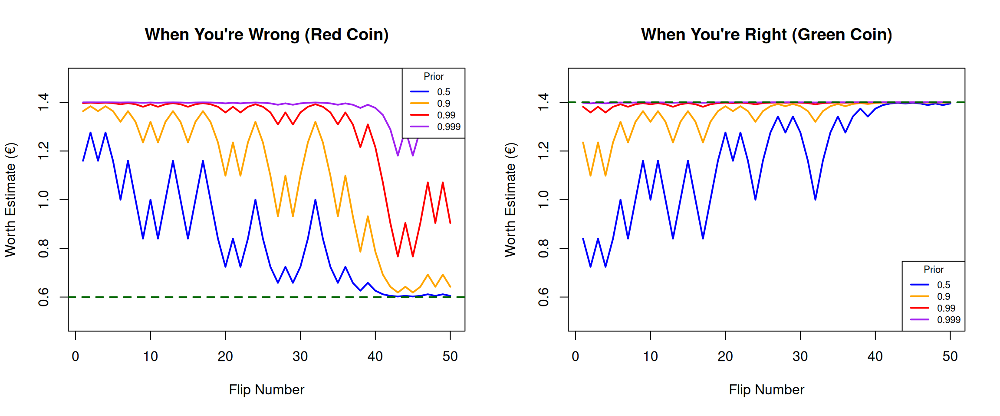

# We'll use base R for most of this, keeping dependencies minimal
set.seed(2011) # The year of our hypothetical investorProject Solution: The Coin-Flipping Investment Game
Bayesian Updating and the Cost of Overconfidence
Introduction
This document provides complete solutions to the Coin-Flipping Investment Game project. The project illustrates one of the most important lessons in probabilistic reasoning: the asymmetric cost of overconfidence.
Part 1: Understanding the Worth Calculation
Solution 1.1: Expected Value
(a) With a 90% belief the coin is green:
\[\text{Worth} = 0.90 \times €1.40 + 0.10 \times €0.60 = €1.26 + €0.06 = €1.32\]
(b) The function:
calculate_worth <- function(prob_green) {
worth_green <- 1.40 # Expected value of green coin flip
worth_red <- 0.60 # Expected value of red coin flip
prob_green * worth_green + (1 - prob_green) * worth_red
}
# Test
calculate_worth(0.9) # Should return 1.32[1] 1.32We can verify this makes sense at the boundaries:
# When certain it's green (prob = 1), worth should be 1.40
calculate_worth(1.0)[1] 1.4# When certain it's red (prob = 0), worth should be 0.60
calculate_worth(0.0)[1] 0.6# When completely uncertain (prob = 0.5), worth should be 1.00
calculate_worth(0.5)[1] 1Part 2: Implementing Bayesian Updating
Solution 2.1: Implementing Bayes’ Rule
The key insight is that we’re computing:
\[P(\text{Green}|\text{Data}) = \frac{P(\text{Data}|\text{Green}) \cdot P(\text{Green})}{P(\text{Data}|\text{Green}) \cdot P(\text{Green}) + P(\text{Data}|\text{Red}) \cdot P(\text{Red})}\]
update_belief <- function(prior_green, n_heads, n_flips) {
# Coin parameters
p_heads_green <- 0.7
p_heads_red <- 0.3
# Calculate likelihood of observed data under each hypothesis
# P(k heads in n flips | coin type) follows binomial distribution
likelihood_green <- dbinom(n_heads, size = n_flips, prob = p_heads_green)
likelihood_red <- dbinom(n_heads, size = n_flips, prob = p_heads_red)
# Prior for red coin
prior_red <- 1 - prior_green
# Bayes' Rule: P(G|D) = P(D|G) * P(G) / P(D)
# where P(D) = P(D|G)*P(G) + P(D|R)*P(R)
numerator <- likelihood_green * prior_green
denominator <- likelihood_green * prior_green + likelihood_red * prior_red
posterior_green <- numerator / denominator
return(posterior_green)
}Let’s test this with the scenario from the article: 10 flips with only 2 heads, starting from a 0.9 prior:
# After 10 flips with 2 heads (80% tails!), starting from 0.9 prior
posterior <- update_belief(prior_green = 0.9, n_heads = 2, n_flips = 10)
cat("Posterior P(Green):", round(posterior, 4), "\n")Posterior P(Green): 0.0528 cat("Worth estimate:", round(calculate_worth(posterior), 4), "\n")Worth estimate: 0.6423 Even with strong initial belief (90%) that the coin is green, observing 2 heads in 10 flips dramatically shifts our belief. This is Bayesian updating at work!
Let’s see how this changes with different numbers of heads:
# How does posterior change with different observations?
heads_observed <- 0:10
posteriors <- sapply(heads_observed, function(h) {
update_belief(prior_green = 0.9, n_heads = h, n_flips = 10)
})
# Display as a nice table
results_df <- data.frame(
Heads = heads_observed,
Tails = 10 - heads_observed,
Posterior_Green = round(posteriors, 4),
Worth_Estimate = round(calculate_worth(posteriors), 2)
)
print(results_df) Heads Tails Posterior_Green Worth_Estimate
1 0 10 0.0019 0.60
2 1 9 0.0101 0.61
3 2 8 0.0528 0.64
4 3 7 0.2329 0.79
5 4 6 0.6231 1.10
6 5 5 0.9000 1.32
7 6 4 0.9800 1.38
8 7 3 0.9963 1.40
9 8 2 0.9993 1.40
10 9 1 0.9999 1.40
11 10 0 1.0000 1.40Notice how the posterior swings dramatically based on the evidence. With 7 heads (exactly what we’d expect from a green coin), we become even more confident. With 3 heads (what we’d expect from a red coin), our belief collapses despite the strong prior.
Solution 2.2: Sequential Updating
simulate_round <- function(true_color, prior_green, n_flips = 50) {
# Set the true probability of heads
p_heads <- ifelse(true_color == "green", 0.7, 0.3)
# Initialize storage
results <- data.frame(
flip_number = 1:n_flips,
result = character(n_flips),
cumulative_heads = integer(n_flips),
posterior_green = numeric(n_flips),
worth_estimate = numeric(n_flips),
stringsAsFactors = FALSE
)
# Simulate all flips at once for efficiency
flips <- rbinom(n_flips, size = 1, prob = p_heads) # 1 = Heads, 0 = Tails
# Sequential updating
cumulative_heads <- 0
for (i in 1:n_flips) {
# Update cumulative count
cumulative_heads <- cumulative_heads + flips[i]
# Update belief using Bayes' Rule
posterior <- update_belief(prior_green, n_heads = cumulative_heads, n_flips = i)
# Calculate worth estimate
worth <- calculate_worth(posterior)
# Store results
results$result[i] <- ifelse(flips[i] == 1, "H", "T")
results$cumulative_heads[i] <- cumulative_heads
results$posterior_green[i] <- posterior
results$worth_estimate[i] <- worth
}
return(results)
}Let’s test with a single simulation:
# Simulate one round with a red coin, starting with 0.9 prior
test_round <- simulate_round(true_color = "red", prior_green = 0.9)
# Show first 15 flips
head(test_round, 15) flip_number result cumulative_heads posterior_green worth_estimate
1 1 T 0 0.7941176471 1.2352941
2 2 T 0 0.6230769231 1.0984615
3 3 T 0 0.4146757679 0.9317406
4 4 T 0 0.2329073482 0.7863259
5 5 T 0 0.1151416237 0.6921133
6 6 H 1 0.2329073482 0.7863259
7 7 T 1 0.1151416237 0.6921133
8 8 T 1 0.0528218340 0.6422575
9 9 H 2 0.1151416237 0.6921133
10 10 T 2 0.0528218340 0.6422575
11 11 T 2 0.0233424966 0.6186740
12 12 T 2 0.0101391691 0.6081113
13 13 T 2 0.0043706811 0.6034965
14 14 T 2 0.0018778390 0.6015023
15 15 T 2 0.0008056526 0.6006445# Quick visualization
plot(test_round$flip_number, test_round$worth_estimate,
type = "l", col = "blue", lwd = 2,
xlab = "Flip Number", ylab = "Worth Estimate (€)",
main = "Bayesian Learning: Red Coin with 0.9 Green Prior",
ylim = c(0.5, 1.5))
abline(h = 0.60, col = "red", lty = 2, lwd = 2)
abline(h = 1.40, col = "green", lty = 2, lwd = 2)
legend("topright",
legend = c("Worth Estimate", "True Worth (Red)", "Worth if Green"),
col = c("blue", "red", "green"), lty = c(1, 2, 2), lwd = 2)
Part 3: Visualizing the Cost of Overconfidence
Solution 3.1: Convergence Under Different Priors
This is where the key insight emerges. We’ll use the same random seed to ensure all simulations see the same flip sequence:
# Define priors to compare
priors <- c(0.5, 0.9, 0.99, 0.999)
prior_labels <- c("0.500 (No idea)", "0.900 (Likely green)",
"0.990 (Very likely green)", "0.999 (Virtually certain green)")
# Generate one sequence of flips from a RED coin
set.seed(42) # For reproducibility
n_flips <- 50
p_heads_red <- 0.3
flip_sequence <- rbinom(n_flips, size = 1, prob = p_heads_red)
# Function to update beliefs for a given flip sequence
update_with_sequence <- function(flip_sequence, prior_green) {
n <- length(flip_sequence)
posteriors <- numeric(n)
cumulative_heads <- 0
for (i in 1:n) {
cumulative_heads <- cumulative_heads + flip_sequence[i]
posteriors[i] <- update_belief(prior_green, cumulative_heads, i)
}
return(posteriors)
}
# Calculate posteriors for each prior
posterior_matrix <- sapply(priors, function(p) {
update_with_sequence(flip_sequence, p)
})
# Convert posteriors to worth estimates
worth_matrix <- apply(posterior_matrix, 2, calculate_worth)Now let’s create the visualization that recreates the article’s key chart:
# Set up colors
colors <- c("blue", "orange", "red", "purple")
# Create the plot
plot(1:n_flips, worth_matrix[, 1], type = "l", col = colors[1], lwd = 2,
xlab = "Flip Number", ylab = "Worth Estimate (€)",
main = "Convergence to True Worth: Red Coin (True Worth = €0.60)",
ylim = c(0.5, 1.5), xlim = c(1, 50))
# Add lines for other priors
for (i in 2:4) {
lines(1:n_flips, worth_matrix[, i], col = colors[i], lwd = 2)
}
# Add reference line for true worth
abline(h = 0.60, col = "darkgreen", lty = 2, lwd = 2)
abline(h = 0.80, col = "gray", lty = 3) # Threshold line
# Add legend
legend("topright",
legend = c(prior_labels, "True Worth (€0.60)"),
col = c(colors, "darkgreen"),
lty = c(1, 1, 1, 1, 2), lwd = 2,
cex = 0.8)
# Add grid
grid(nx = NULL, ny = NULL, lty = 1, col = "lightgray")
(c) Let’s calculate how many flips each prior needs to fall below €0.80:
# Find first flip where worth < 0.80 for each prior
convergence_flips <- apply(worth_matrix, 2, function(w) {
below_threshold <- which(w < 0.80)
if (length(below_threshold) > 0) min(below_threshold) else NA
})
names(convergence_flips) <- prior_labels
cat("Flips needed to reach worth estimate below €0.80:\n")Flips needed to reach worth estimate below €0.80:for (i in 1:4) {
cat(sprintf(" Prior %s: %s flips\n",
prior_labels[i],
ifelse(is.na(convergence_flips[i]), ">50", convergence_flips[i])))
} Prior 0.500 (No idea): 20 flips
Prior 0.900 (Likely green): 38 flips
Prior 0.990 (Very likely green): 43 flips
Prior 0.999 (Virtually certain green): >50 flipsKey Observation: The more confident your initial belief, the longer it takes to learn from disconfirming evidence. A 0.999 prior can take 3-4 times as many observations to correct as a 0.5 prior!
Solution 3.2: The Asymmetry of Overconfidence
Now let’s see what happens when the coin really IS green:
# Generate flip sequence from a GREEN coin
set.seed(42)
p_heads_green <- 0.7
flip_sequence_green <- rbinom(n_flips, size = 1, prob = p_heads_green)
# Calculate posteriors for each prior
posterior_matrix_green <- sapply(priors, function(p) {
update_with_sequence(flip_sequence_green, p)
})
# Convert to worth estimates
worth_matrix_green <- apply(posterior_matrix_green, 2, calculate_worth)# Create the plot
plot(1:n_flips, worth_matrix_green[, 1], type = "l", col = colors[1], lwd = 2,
xlab = "Flip Number", ylab = "Worth Estimate (€)",
main = "Convergence to True Worth: Green Coin (True Worth = €1.40)",
ylim = c(0.5, 1.5), xlim = c(1, 50))
# Add lines for other priors
for (i in 2:4) {
lines(1:n_flips, worth_matrix_green[, i], col = colors[i], lwd = 2)
}
# Add reference line for true worth
abline(h = 1.40, col = "darkgreen", lty = 2, lwd = 2)
# Add legend
legend("bottomright",
legend = c(prior_labels, "True Worth (€1.40)"),
col = c(colors, "darkgreen"),
lty = c(1, 1, 1, 1, 2), lwd = 2,
cex = 0.8)
# Add grid
grid(nx = NULL, ny = NULL, lty = 1, col = "lightgray")
The Asymmetry Revealed:
When the coin is GREEN and you thought it was green: All priors quickly converge to the correct value. The confident priors (0.99, 0.999) barely move because they were already near the truth.
When the coin is RED and you thought it was green: The confident priors take dramatically longer to correct. They keep you bidding too much, losing money on every flip.
(c) Explanation of asymmetric cost:
The asymmetry arises because:
If you’re right with high confidence: You gain very little compared to moderate confidence—you’re both near the truth anyway.
If you’re wrong with high confidence: You lose a lot because it takes many observations to overcome your strong prior, and during all those observations, your estimates are far from reality.
This is the mathematical foundation for intellectual humility: the expected cost of being confidently wrong far exceeds the expected benefit of being confidently right.
Part 4: Simulating a Competition
Solution 4.1: Profit Calculation
calculate_profits <- function(flip_sequence, worth_estimates) {
# For each flip:
# - Pay the worth_estimate
# - Receive 2.00 if Heads (flip = 1), 0.00 if Tails (flip = 0)
n <- length(flip_sequence)
payouts <- flip_sequence * 2.00 # 2.00 for heads, 0.00 for tails
profits <- payouts - worth_estimates
cumulative_profit <- cumsum(profits)
return(data.frame(
flip = 1:n,
payout = payouts,
price_paid = worth_estimates,
profit = profits,
cumulative_profit = cumulative_profit
))
}Solution 4.2: Expected Loss from Overconfidence
(a) Let’s calculate total profit/loss for each prior when the coin is red:
# Calculate profits for each prior (using the red coin sequence)
profit_results <- lapply(1:4, function(i) {
calculate_profits(flip_sequence, worth_matrix[, i])
})
# Extract final cumulative profits
final_profits <- sapply(profit_results, function(df) tail(df$cumulative_profit, 1))
names(final_profits) <- prior_labels
cat("Total Profit/Loss over 50 flips (Red coin, you thought green):\n")Total Profit/Loss over 50 flips (Red coin, you thought green):for (i in 1:4) {
cat(sprintf(" %s: €%.2f\n", prior_labels[i], final_profits[i]))
} 0.500 (No idea): €2.25
0.900 (Likely green): €-10.39
0.990 (Very likely green): €-19.89
0.999 (Virtually certain green): €-24.70(b) The difference in losses:
loss_difference <- final_profits[4] - final_profits[1]
cat(sprintf("\nExtra loss from 0.999 prior vs 0.500 prior: €%.2f\n",
abs(loss_difference)))
Extra loss from 0.999 prior vs 0.500 prior: €26.95Let’s visualize the cumulative profits:
plot(1:50, profit_results[[1]]$cumulative_profit, type = "l",
col = colors[1], lwd = 2,
xlab = "Flip Number", ylab = "Cumulative Profit (€)",
main = "Cumulative Profit: Red Coin with Different Priors",
ylim = range(sapply(profit_results, function(df) range(df$cumulative_profit))))
for (i in 2:4) {
lines(1:50, profit_results[[i]]$cumulative_profit, col = colors[i], lwd = 2)
}
abline(h = 0, col = "black", lty = 2)
legend("bottomleft",
legend = prior_labels,
col = colors, lty = 1, lwd = 2, cex = 0.8)
grid()
(c) Multiple rounds with 90% green bucket:
simulate_multiple_rounds <- function(n_rounds, n_flips, prior_green, bucket_prob_green) {
total_profits <- numeric(n_rounds)
for (round in 1:n_rounds) {
# Draw coin from bucket
true_color <- ifelse(runif(1) < bucket_prob_green, "green", "red")
p_heads <- ifelse(true_color == "green", 0.7, 0.3)
# Generate flips
flips <- rbinom(n_flips, 1, p_heads)
# Update beliefs and get worth estimates
worths <- calculate_worth(sapply(1:n_flips, function(i) {
update_belief(prior_green, sum(flips[1:i]), i)
}))
# Calculate profit
total_profits[round] <- sum(flips * 2 - worths)
}
return(total_profits)
}
# Run simulation for each prior
set.seed(123)
n_rounds <- 100
n_flips <- 50
bucket_prob <- 0.9 # 90% green coins in bucket
multi_round_results <- lapply(priors, function(p) {
simulate_multiple_rounds(n_rounds, n_flips, p, bucket_prob)
})
# Summarize results
cat("Performance over", n_rounds, "rounds (90% green bucket):\n\n")Performance over 100 rounds (90% green bucket):for (i in 1:4) {
profits <- multi_round_results[[i]]
cat(sprintf("%s:\n", prior_labels[i]))
cat(sprintf(" Mean profit per round: €%.2f\n", mean(profits)))
cat(sprintf(" Std dev: €%.2f\n", sd(profits)))
cat(sprintf(" Total profit: €%.2f\n\n", sum(profits)))
}0.500 (No idea):
Mean profit per round: €2.71
Std dev: €5.25
Total profit: €271.05
0.900 (Likely green):
Mean profit per round: €0.94
Std dev: €6.38
Total profit: €94.36
0.990 (Very likely green):
Mean profit per round: €-0.75
Std dev: €6.57
Total profit: €-75.28
0.999 (Virtually certain green):
Mean profit per round: €-1.32
Std dev: €8.43
Total profit: €-131.74Insight: When the bucket truly does contain 90% green coins, the 0.9 prior performs best because it correctly reflects reality. But the 0.999 prior still performs reasonably well because it’s usually right. The 0.5 prior loses money unnecessarily when the coin is green (which happens 90% of the time).
This illustrates the full picture: your prior should match your actual evidence. Overconfidence hurts when you’re wrong, but underconfidence also hurts when you’re right.
Part 5: Connecting to Real-World Investing
Solution 5.1: The Profit Margin Analogy
(a) Mapping the analogy:
| Coin Game | Profit Margin Scenario |
|---|---|
| “The coin is green” | “Profit margins will stay elevated” |
| “The coin is red” | “Profit margins will revert to the mean” |
| Flips landing mostly tails | Years passing with margins staying high |
| Assigning 0.999 prior to red | Being highly confident margins would revert |
| Worth estimate | Fair value estimate for stocks |
| Paying too much for flips | Staying in cash while market rallies |
(b) The investor’s mistake explained:
The investor started with a reasonable prior (maybe 70-80%) that profit margins would mean-revert, based on historical precedent. But as years passed without reversion, proper Bayesian updating should have lowered that probability steadily.
Instead, many investors effectively kept a 0.99+ prior, requiring overwhelming evidence to change their view. Just as our 0.999 prior player kept paying €1.35 for flips worth €0.60, these investors kept waiting for a mean reversion that wasn’t coming, missing out on the market rally.
Solution 5.2: Calibrating Confidence
(a) Evidence justifying a 0.999 prior in the coin game:
- Physically examining the coin and seeing it’s green
- Being told by a completely trustworthy source
- Watching 100+ previous flips with 70% heads
- Having the referee explicitly tell you
Notice these involve direct evidence about the specific coin, not general patterns.
(b) Evidence investors had about profit margin reversion:
- Historical pattern (but only 2-4 clear instances)
- General economic theory about competition
- Analogy to past cycles
This evidence was indirect and small-sample. It might justify a 0.7 or 0.8 prior, but certainly not 0.99+.
(c) Reality check for strongly-held beliefs:
- Sample size check: How many independent observations support this belief?
- Alternative explanation check: What else could explain the pattern?
- Disconfirmation threshold: What evidence would change my mind?
- Pre-registration: Before seeing more data, what probability would I assign to different outcomes?
Key Takeaways
par(mfrow = c(1, 2))
# Plot 1: Red coin scenario
plot(1:n_flips, worth_matrix[, 1], type = "l", col = colors[1], lwd = 2,
xlab = "Flip Number", ylab = "Worth Estimate (€)",
main = "When You're Wrong (Red Coin)",
ylim = c(0.5, 1.5))
for (i in 2:4) lines(1:n_flips, worth_matrix[, i], col = colors[i], lwd = 2)
abline(h = 0.60, col = "darkgreen", lty = 2, lwd = 2)
legend("topright", legend = c("0.5", "0.9", "0.99", "0.999"),
col = colors, lty = 1, lwd = 2, title = "Prior", cex = 0.7)
# Plot 2: Green coin scenario
plot(1:n_flips, worth_matrix_green[, 1], type = "l", col = colors[1], lwd = 2,
xlab = "Flip Number", ylab = "Worth Estimate (€)",
main = "When You're Right (Green Coin)",
ylim = c(0.5, 1.5))
for (i in 2:4) lines(1:n_flips, worth_matrix_green[, i], col = colors[i], lwd = 2)
abline(h = 1.40, col = "darkgreen", lty = 2, lwd = 2)
legend("bottomright", legend = c("0.5", "0.9", "0.99", "0.999"),
col = colors, lty = 1, lwd = 2, title = "Prior", cex = 0.7)
par(mfrow = c(1, 1))The Core Lesson:
- When you’re right with high confidence, you gain little over moderate confidence
- When you’re wrong with high confidence, you lose a lot compared to moderate confidence
- Therefore, high confidence should require strong evidence
This asymmetry is why good Bayesian reasoners—whether investors, scientists, or everyday decision-makers—calibrate their confidence carefully. The mathematical framework of Bayes’ Rule provides both the mechanism for updating and a warning about the costs of overconfidence.
References
- “Profit Margins, Bayes’ Theorem, and the Dangers of Overconfidence” - Philosophical Economics (September 2017)
- Kahneman, D. (2011). Thinking, Fast and Slow. Chapter on overconfidence.
- Tetlock, P. & Gardner, D. (2015). Superforecasting. On calibrated probability judgments.